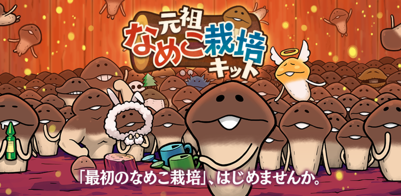
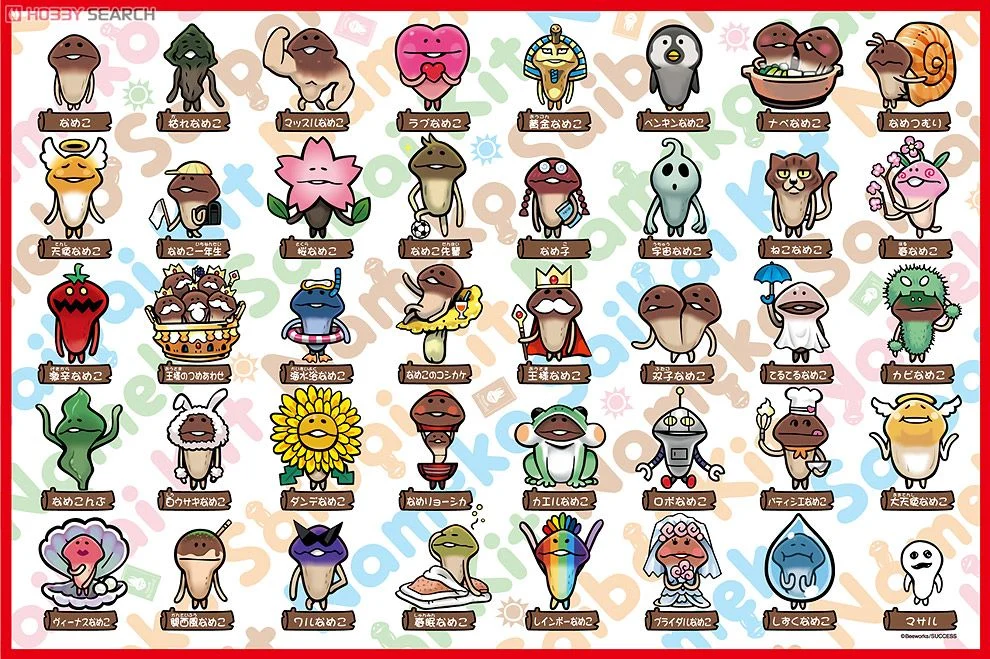

スマホゲーム『なめこ栽培キット』シリーズなどに登場する大人気のキャラクターです。もともとはニンテンドーDSソフト『おさわり探偵 小沢里奈』の助手として登場し、のちにスピンオフアプリの大ヒットで世界的なキャラクターとなりました。
実は言葉が通じている
➡すべて「んふんふ」という鳴き声(言葉)しか発しませんが、意思疎通は完全に可能。
乾燥すると「枯れなめこ」になる
➡ゲーム内でえさを与えずに放置するとカサカサの枯れなめこになってしまいますが、これは死んだわけではなく、『光が強ければ強いほど闇も強くなるのだ』と中二病のようなセリフを心の中でつぶやく。


| 順位 | 名前 | 票数 |
|---|---|---|
| １位 | なめこ | 2,012 |
| ２位 | マサル | 1,094 |
| ３位 | なめこ盛り合わせ | 726 |
| ４位 | ラブなめこ | 705 |
| ５位 | 白うさぎなめこ | 684 |